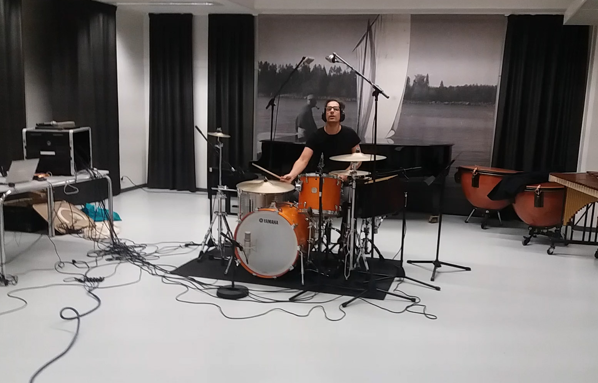
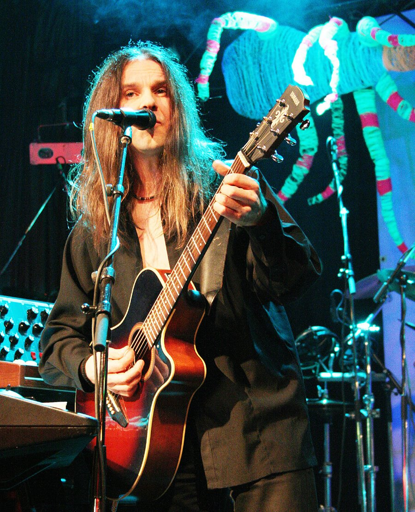
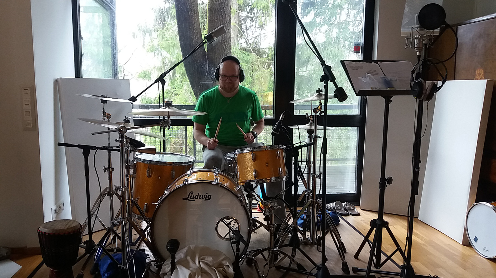
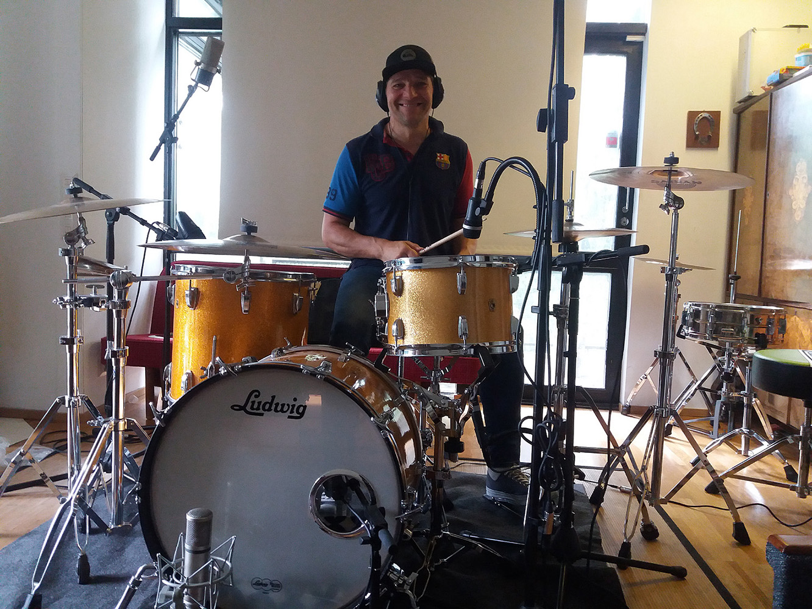
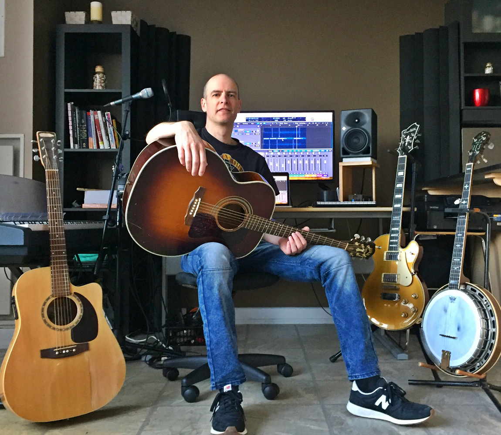
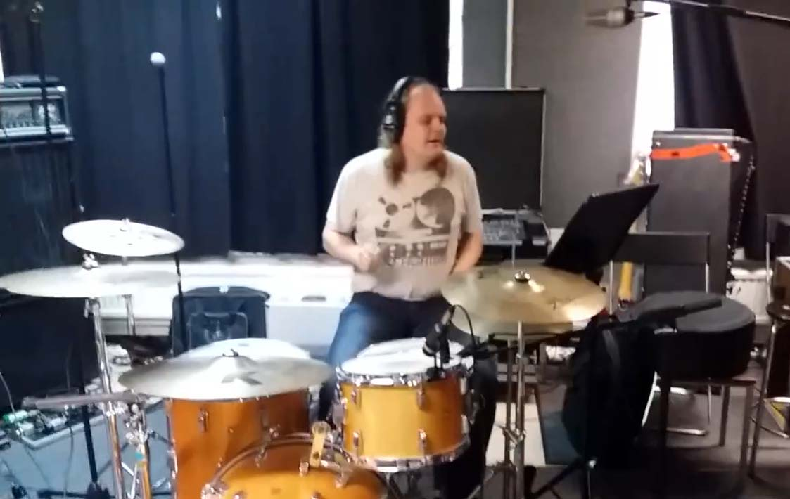
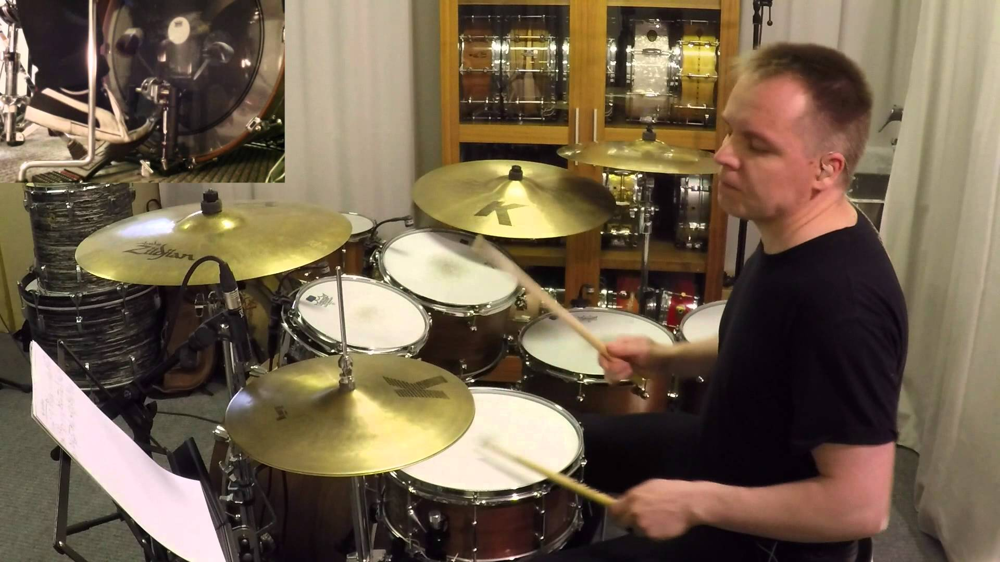
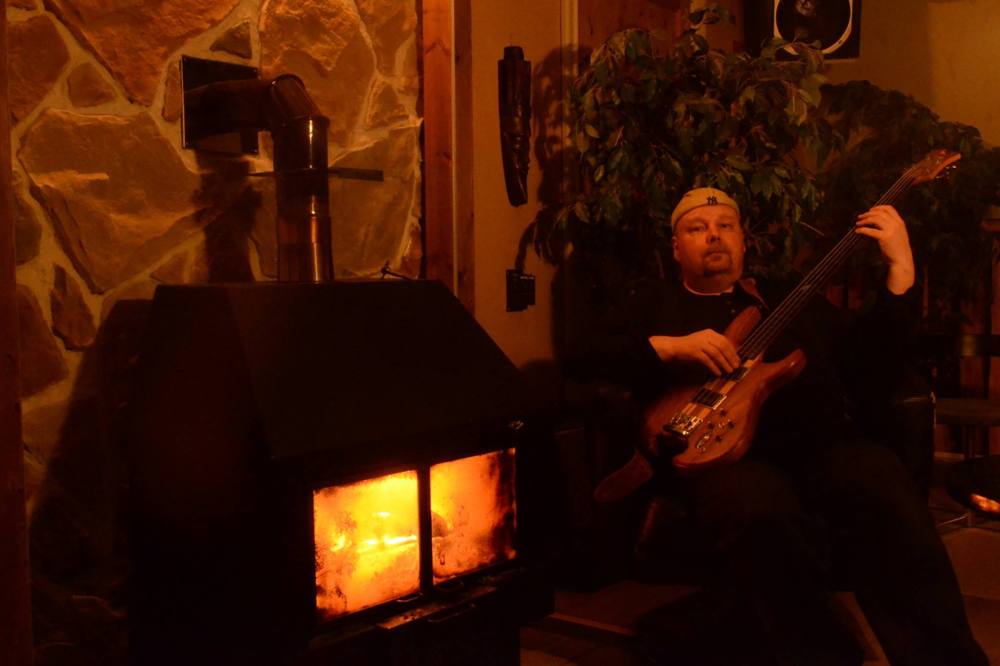
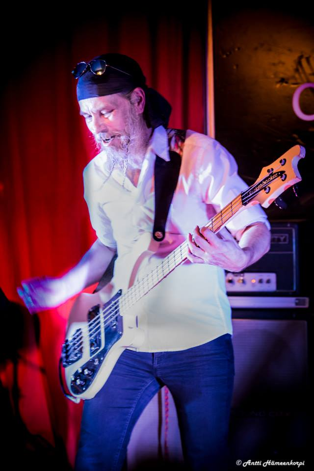
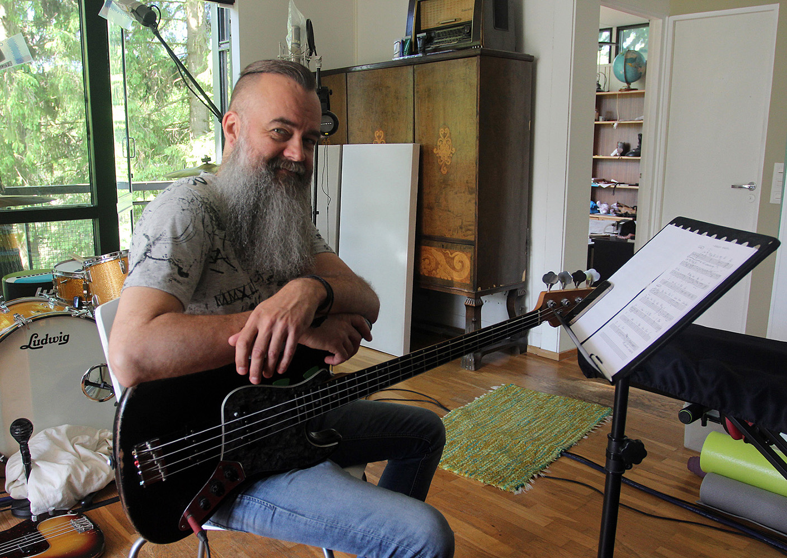

This album is a collection of my songs dating back to the 90's. They all tell stories of my own experiences on being lonely, in love, and in relationships; the joys and sorrows that followed me.
Production & Style
I arranged the songs in my own style and taste of music. I played keyboards, guitars, and some bass. I also did backing vocals, composing, arranging, lyrics, recording, producing, mixing, and mastering.
It has been a long and demanding project (2015-2018), and I'm grateful to the amazing musicians who collaborated with me on this project, adding their unique talents to the final product.
I wanted to share all the lyrics and some short comments on the songs. Hopefully, you’ll start listening from the top and let it play all the way through — just like we used to do back in the days of LPs.
Listening Experience
So, grab your best headphones or turn on your hifi stereo set, hit the play button and enjoy.
If you prefer, you can use
Spotify
instead of Youtube.
Catching a dream is all I do
Worrying too much, I remember you
We had a chance, I threw it away
I'm asking for help, give me a chance again
I was so young, so ignorant too
You needed more, I couldn't give it to you
Now it's too late, I can see the end
I wanna live, I wanna give and I wanna love again
Endless are the nights when I think about my life
What did I say what did I do
Endless are the nights, I'm losing the fight
knowing I can't be in the past living it anymore
I can see myself talking to you
Healing the wounds, meeting someone new
There comes a time when I'm ready for you
I break my heart if I see you too soon
Waiting is all, just a means to an end
I wanna live, I wanna give and I wanna love again
Sweet first love!! It went downhill almost from day one, ha! It was too difficult for a young man to communicate and show feelings properly. A wounded heart plagued me for years and made other romances more difficult. What if I'd get more disappointments and cuts in my heart? It took years and years to get over it and grow from it. Now all is okay. There is more understanding instead of the fear and uncertainty of a young person. That's how things happen.
"Get over it, and go downhill again!"
I could be your lover boy
I could be your handyman
Tell me whatever you want
I will do it the very best I can
If you're troubled I listen to you
If you're I'll pamper you
I can take you to a far away land
I will give my heart to your hand
Stay with me here tonight
And I prove my love to you
Stay with me here tonight
And my promises come true
You've got to stay
I could be the one
So much better than anyone
I can give you whatever you need
I will show you the true me
If you're troubled I listen to you
If you're ill I pamper you
I can take you to a far away land
I will give my heart to your hand
How are your flirting skills? Everyone should take a basic course in flirting in their teenage years. Showing off with a bit of humour is always a good thing. Let's not take things TOO seriously! Especially if you want things to happen fast, and you can take the initiative.
But can you accept someone flirting with you? It's okay to be charming.
Candles burning
No more wine
I've been planning this all the time
I'm slowly learning
to make you smile
Everything else can wait a while
I get this feeling
I'd like to make you mine
But do you really want me to stay?
Let's make this our night
Let's make this our night
Oh you are my only light
When the candles burn down
There are no lies
In the flame in your eyes
It draws me closer
To feel your heat
And even closer
to your heart beat
You might stop me
But I know you play this game
Do you really want me to stay?
Flirting part two, for advanced players and also for those who are dead serious about finding a mate. Be brave! Take a chance! Don't be afraid of being rejected! Even a glimpse of humour can take you to home base. Or to the moon base.
Do you know the feeling when two people are getting closer and closer for the first time? How exciting that is! Who makes the first move? Will she/he follow or reject? The world stands still around you.
When she needed a helping hand she asked me to her place
to talk about the day she had
how it turned to be so great
I was fading away, hard to hear what she said
and saw myself being a fool again
In my misery I called her name
She looked at me eyes full of blame
I am her faithful man and fighting for our love
If she really knows me I can fly away like a dove
If I'm her faithful man my love should never die
What I feel inside should take her by surprise
When I told her I was down and misunderstood
she blamed herself and cried aloud
It didn't do much good
So I asked myself - do I just pretend
No sympathy, so is this the end?
In my agony I saw her tear
She looked at me eyes full of fear
Are we really on the same page?! Do you hear what I say?! Are we communicating back and forth?!
I can be yours only to a limit. You can be sure I do everything I can for the relationship. I am faithful till the end, but when the door closes behind us, it's bye-bye and have a good life. No turning back.
But hey, we tried, failed, and it's alright! That's LIFE!
Another day another night
You've been trying to avoid me
If you could say what's on your mind
we would find our love in time
Something bad I have said made you crazy
I don't care who started the fight
Come on we can make it alright
Talk to me and listen to me
Hey girl, I give you my heart now and forever
Take my hand
Please understand
I'm a fool, if I let you go, now and forever
I don't want to be the man
who ran away and let you down
But I'm no Superman
If you look into my eyes you know I'm never gonna tell you more lies
If you listen to your heart you know I'm never gonna break it apart
If you look into my eyes you know I'm never gonna give you a bad time
If you listen to your heart you know I'm always gonna make you mine
You were going out with a guy
He was holding your hand
Tell me what's going on
Will you give us another chance?
See yourself
with someone else
You're a fool, it won't work, now or never
I'll always to be your man
I'll give you all I can
But I'm no Superman
Promises. Betrayal. Hopeless love. Desperation. You live them to a point where you could lose it completely! But still you are ready to go through them again and again for the sake of love.
You are just stupid!
The lady in blue
in the ball room
The band was playing loud
And the music made me smile
Dancing alone
She was on her own
The way she moved herself
froze me for a while
The most beautiful girl I've ever seen was dancing a heartbeat away
She was dancing away, dancing the night away
inside my heart
Dancing away till the end of night
She was dancing away, dancing the night away
to the beat of my heart
Dancing away till the morning light
Inside my heart
Her head on my shoulder
Whispers I told her
Her body next to mine at least in my mind
She gave me a smile
And watched me for a while
She was standing close to me
But I was too blind
Throughout my life she was the one I always wanted to find
I've been waiting much too long
always alone and without love
I thought all my hope is gone
and I am done with my life
No love
But I found the lady in blue
I saw her dancing alone and I was floored! I forced myself to move closer and make a move. Wild fantasies were rolling in my mind.
I could almost feel her body against mine, dancing the night away.
Maybe I was dreaming.
Only I know what happened in the end...
If I died would you miss me?
If I fell would you lift me?
I can see you've been slowly drifting away
Is it me you wanted
Or some guy to have fun with
I can see your tracks in the dark from far away
What are the chances of pulling through again?
What are the chances of living on with pain?
Shame in the mirror
is breaking my heart
Why did I trust you?
Shame in mirror
is all I got
Why did I love you?
Shame in the mirror
No one can fail me like you do
Shame in the mirror
Why did you lie?
If I left you would you stop me?
If I asked you would you tell me?
I can see you've been cheating and running away from here
Is this all you can give me?
No love, no feelings
I can say this is really more that I can bear
What are the chances of finding love again
What are the chances of fighting till the end
How does it feel to be cheated on? You are still faithful like a dog. Someone is treating you like shit and you swallow it for the sake of love. How can you look at yourself in the mirror anymore?! Where did your self-worth go? You need to rediscover it or you'll never find what you're meant to have.
I am changing
into someone you don't like
No more waging
The war is over with no fight
It doesn't matter what I say or do
I can't be good enough for you
Give me a memory to love
I'm holding on
But I've had enough
Your love to give
Is all I want
My love to give
Is all I got
Don't tell me now
It's gonna be alright
I am breaking
Gotta save the pieces now
No more faking
I need to heal myself somehow
I don't need these lies from you
Its only love that does me good
Give me a moment to find
My heart again
For this while
I want something. You want something. We all do.
What about giving?! If we could learn to give instead of demanding everything for ourselves, we might have a chance for real love. Do you give love without expectations? Is it possible?
Try it!
Here I am
looking through this dirty window
Wondering where you are tonight
Hoping you are feeling all right
I try again
to sleep without you
I remember our last night
how it ended up in terrible fight
Something happened along the way
It must have been something I said
But I don't wanna lie again
I'm gonna give you time
I'm gonna leave behind these tears
Here we are
fighting for ourselves again
Maybe you get under my skin
more than anyone has ever been
I don't know
how to leave this madness
Sweet lust and taste of blood
in the tears of viscous love
I've been looking for a reason
to stay
I gave you all my love
and you know it after all these years
I was far away from her in a different country for a long time, wondering what was going on and where we were going in our relationship. It was time to pause and think about what had happened.
Being alone made me realise that we didn't belong together, and maybe we just shared an illusion of love.
Years ago I met you in Tuscany
You got me burning right away
Everything felt so good instantly
We had awesome seven days
Summer nights quiet love in the moonlight
Tender whispers of lust for a while
And you were gone
Angela
Do you know what you've done?
Angela
Turn around and just run back to me
Angela, come to the light from the dark
Angela, will I ever feel our love in a summer night again
You were my romance of a lifetime
Italian woman of my dreams
After all it was just playtime
But I was playing for keeps
I remember you in the evening sunshine
Where you are now there's no light
Only shadows of the night
Angela, you have been a mystery to me
Every night your face is haunting in my dreams
All those days are now only memories
Just memories
I never wanted to say
Goodbye go away!
Oh come back to me
Holiday romance! I guess it's something that we all dream about. The romance might be a once-in-a-lifetime experience, a memory you will cherish, but do you have the guts to make it happen? Are you up to the challenge?
I don't wanna get close to you now
I know we start fighting somehow
I've been waiting for this day for a long long time
I 'm done with the play. Let's turn off the lights
It's time for letting go
It's time to live alone
It's time for letting go
It's time to find my role
The show is all over, I take a bow
No one is cheering, my head stays down
I can't play the clown. Not one more time
The final curtain comes down and we say goodbye
I want to get off the stage and find myself again
Can't wait to turn a new page and end all this pain
You know the feeling when you are done performing a play? The final curtain is down and you all have done your jobs. It's time to leave. What kind of memories will come up? Good or bad? Maybe mixed. The bittersweet taste will always remain, even if you try spitting it out!
I have a dream that I will find the one and only love,
a soulmate for me
I try to feel and live my life
sometimes in extremes
seeking possibilities
I've been making all my life empty promises
I've been telling myself it's all right
I've been turning every stone to find real happiness
I've been lonely in the darkness of the night
And now I say goodbye
Hey dream, leave me alone
cause never wanna feel the wounds you bring to me
cause I never wanna be disappointed endlessly
So lonely days and lonely nights slowly kill my heart
I can't take it any more
My life in tears is all behind
Is there true love?
Is it all that I live for?
I've been trying all my life to keep my promises
And every time I have to say goodbye
I've been turning every stone to find real happiness
I've been lonely in the darkness of the night
And now this dream will end
Once again
blind faith is my faithful only friend
Who says that I will make it to the end
Just when I'm about to lose my mind again
the dream keeps on haunting me all night long
Finding someone with a deep connection, a true love, is difficult, but that was my dream. I cared for it so much that it started to haunt me. I need to break free and enjoy what I have.
Do you ever think what you have is enough? Or does your dream haunt you too?
THE MUSICIANS
Fortunately, I got great musicians for the album. Thanks again guys!!










Some videos from the sessions with Samir, Kimmo, Timo and Mikko:
{kind=link}
{kind=link}
{kind=link}
{kind=link}
{kind=link}
{kind=link}
{kind=link}
{kind=link}
{kind=link}
{kind=link}
{kind=link}
{kind=link}
{kind=link}
{kind=link}
{kind=link}
{kind=link}
{kind=link}
{kind=link}
{kind=link}